Meridius: phase one build
Status, 20 October 2026 (loop 2): the full loop plays end to end in the browser: base, recruitment, roster, upgrades, expedition preparation with army limits, a randomised campaign, isometric battles and the return home. The environment is now rendered in Blender (trees, rocks, ruins, camp props, all base buildings at three levels, the palisade and campaign landmarks). Units stay as drawn figures until fal is unlocked, by your decision. None of this has been accepted by you yet.
Update, squad system: every unit now fights as a squad of six drawn soldiers (Moss Trolls: three) with shared health, casualties and damage that scales with the living. Details, captures and balance are on the Squad system tab. Captures below this line predate it.
Run it
cd projects/meridius/source/game
npm install
npm run dev # http://localhost:5199
npm test # rules, map generation and full-loop tests
npm run sim # headless battle balanceOpen items
- fal is admin-locked (account "Calle Bernsdorff"). Only fal support can lift it (support@fal.ai). No credits have been spent. When it is unlocked, the painterly unit sprites from your reference sheets are next (plan:
projects/meridius/source/game/art/ART_PLAN.md). - Blender unit renders exist on disk (
art/raw/blender) but are not used, by your decision. - Sound is synthesised placeholder audio.
Captures (loop 2)
Captured from the running game with fixed seeds (Playwright, 1920 × 1080, Edge).
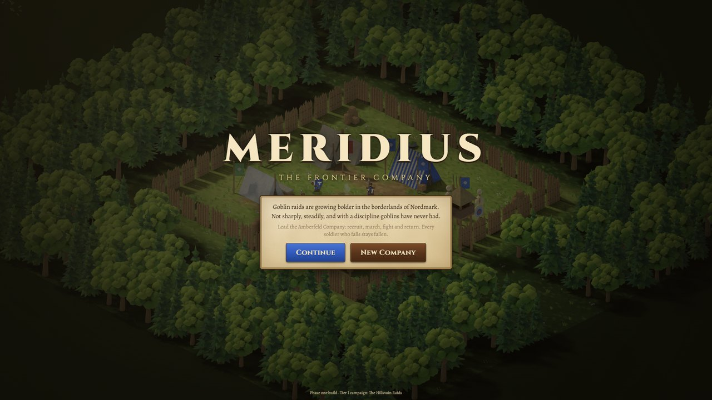
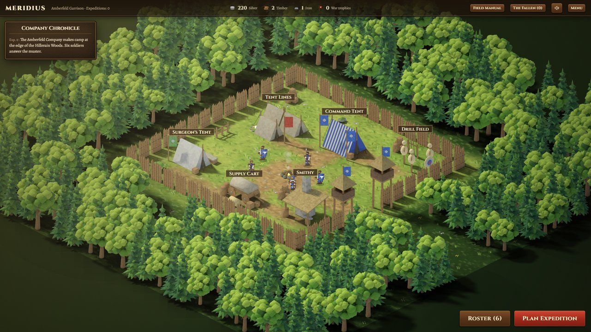
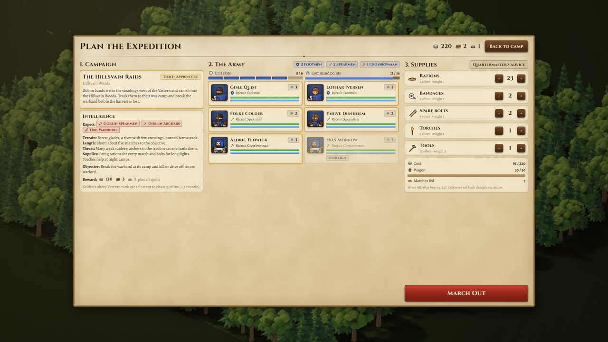
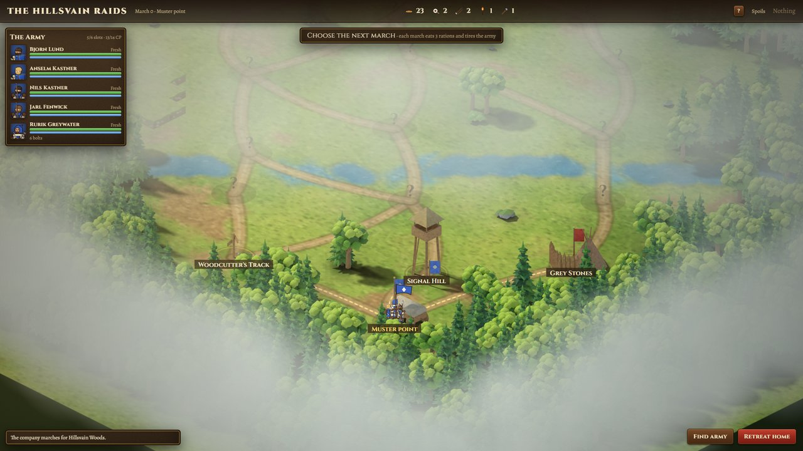
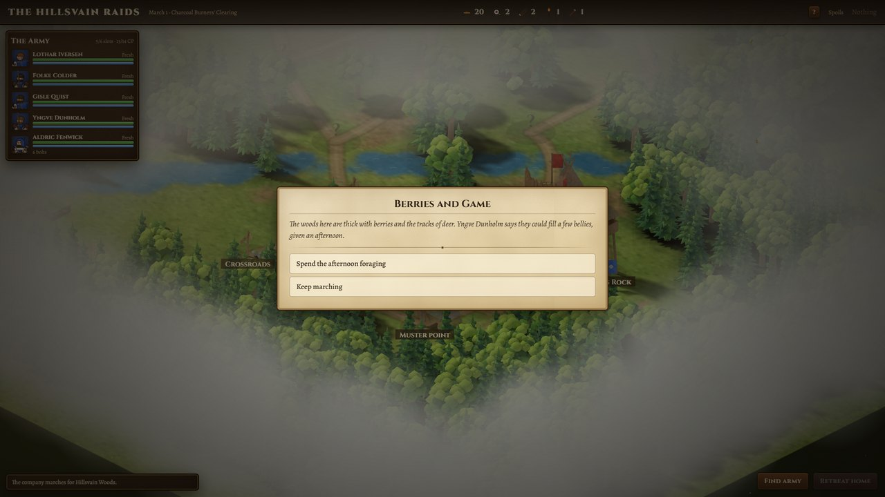
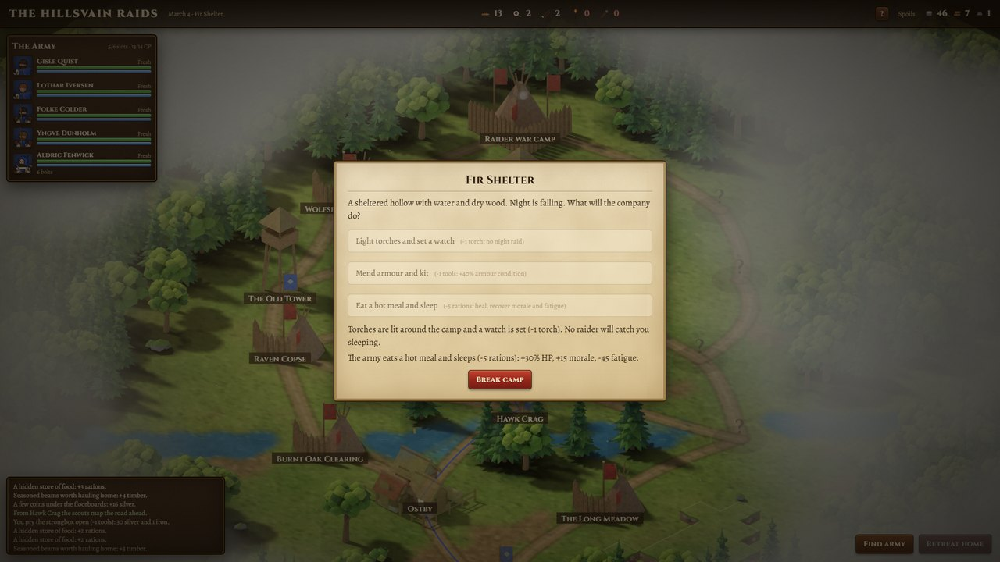
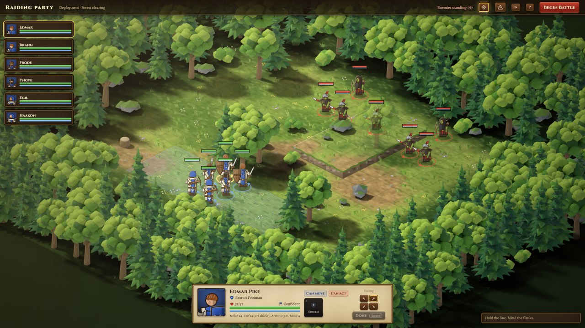
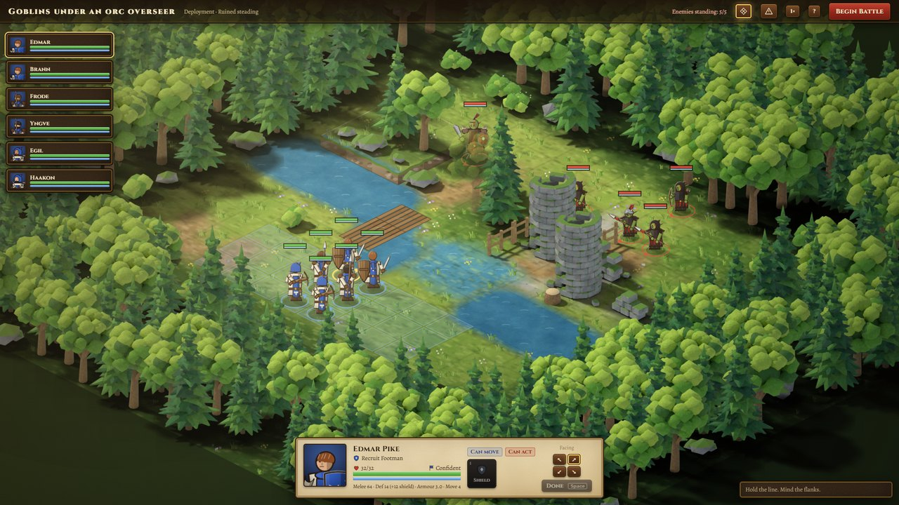
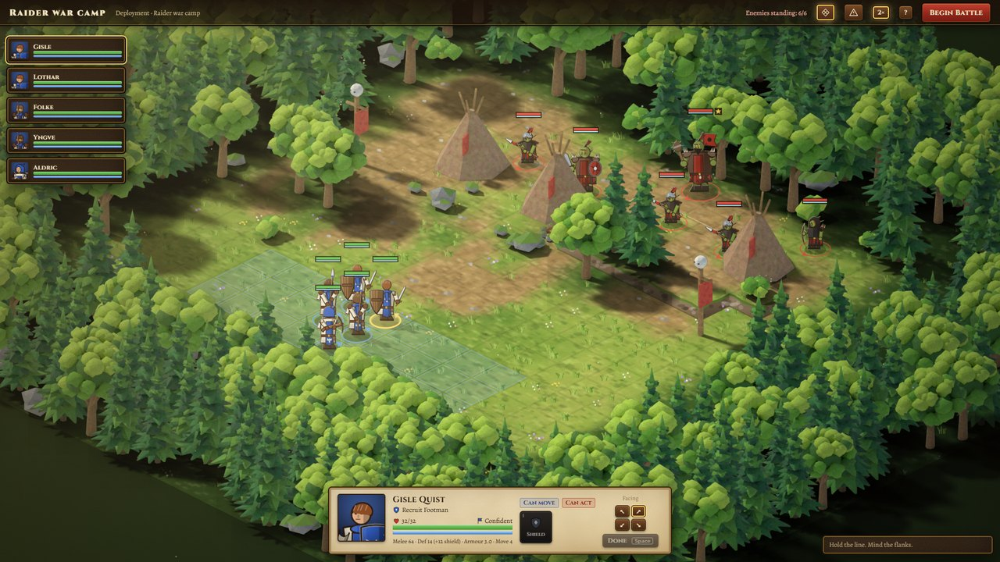
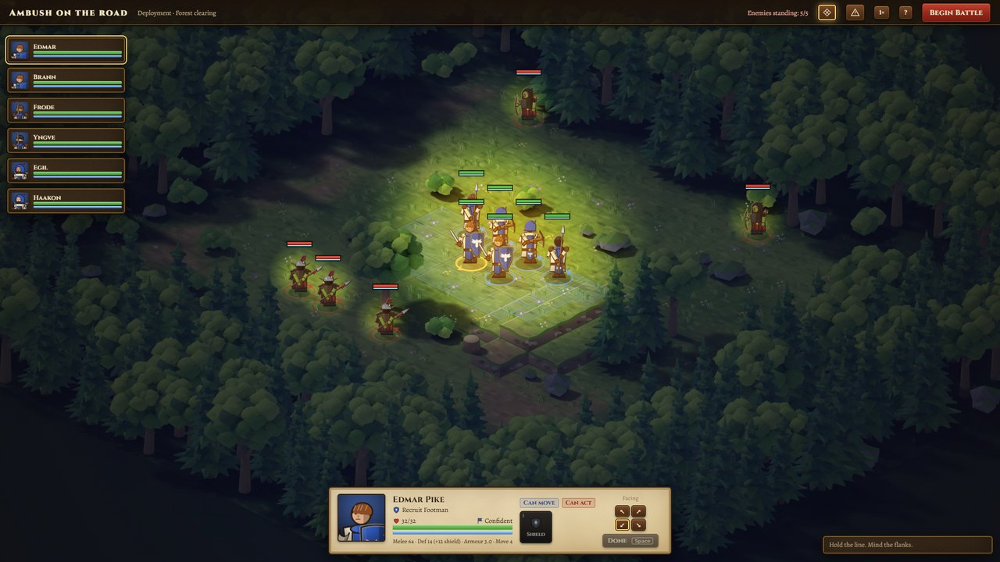
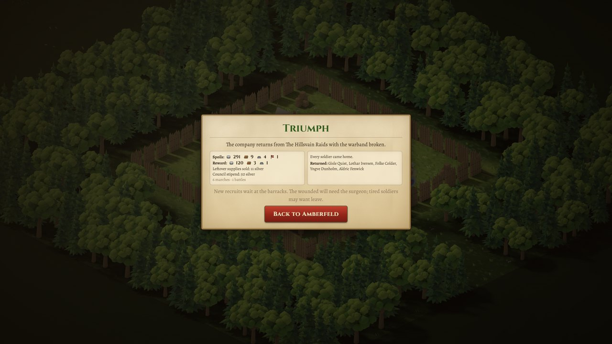
The camp as it grows
All buildings at level 2, then level 3, in the running game. The camp was re-laid out so the larger buildings never hide each other or the gate towers' view, and every nameplate sits on open ground. On short screens the camera rises to keep the tallest nameplate in view, and the chronicle opens compact.
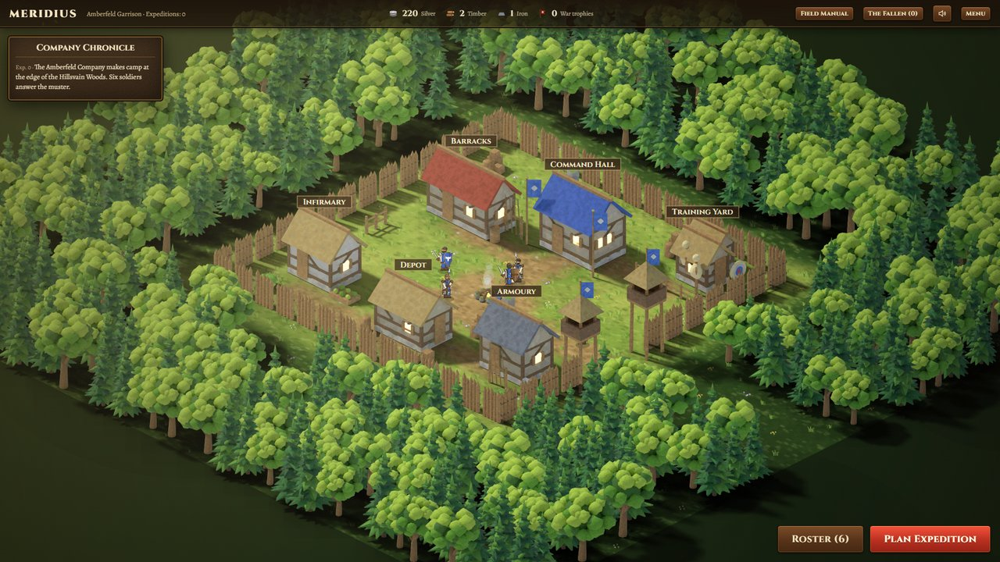
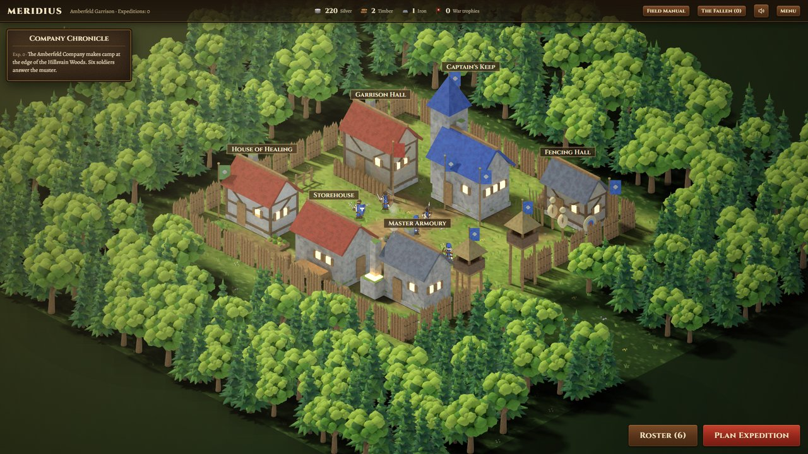
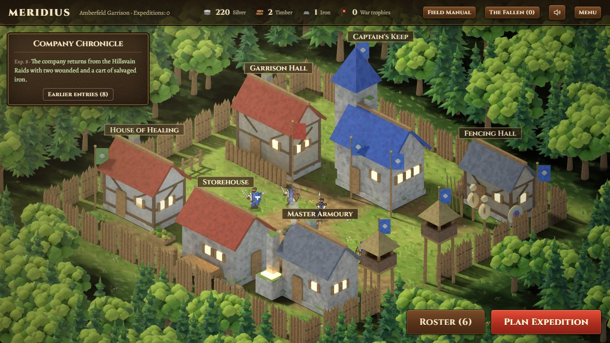
Base buildings, levels 1 to 3
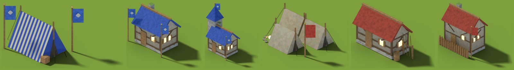
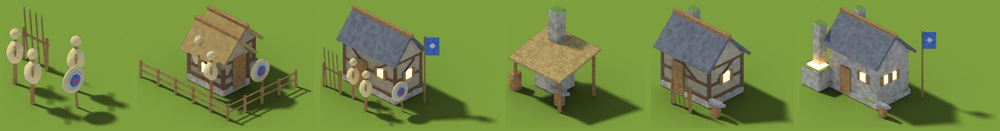
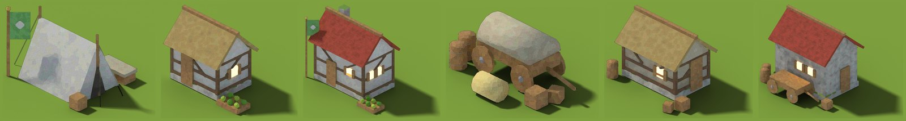
What changed since loop 1
- Blender sprite pipeline: an orthographic camera matched exactly to the game's projection, a sun from the upper left, baked shadows, outlines and a painterly post-pass. Sources:
art/blender/*.py. - Walls and fences come in two orientations, so baked shadows stay correct.
- Camp layout keeps the road to the gate clear; palisade and gate towers.
- Campaign: clearings around landmarks, and the camera looks up the road.
- Battles: props fade only where they actually cover a unit; drawn figures got light, rim and foot shading; chunkier proportions; portraits.
- Gameplay: undo for the last move, ready-unit count, 2× battle speed, a field manual, a welcome briefing, eighteen events, torch-lit night raids, council stipend, volunteers, and a rebalanced economy.
- Battles: redo a move for any soldier who has not acted yet (button, Backspace or Ctrl+Z). Clicks go to the tile you can see, even behind your own soldiers.
- Camp: new layout for upgraded buildings; buildings are picked by their visible outline or nameplate, so the one under the cursor is the one that opens.
- Enemy behaviour: enemies now take worthwhile attacks instead of hovering beside your line, and strike whenever they end a move within reach. Shaken and wavering enemies still hang back. Passed-up attacks fell from 25–57% to 9–26% of chances, almost all of them now by shaken troops.
- Battle header follows what is on screen: during the enemy's turn it says "Enemy move", and the enemy count drops as each foe visibly falls.
- Battle speed and sound on/off are remembered between sessions; 2× speed applies to battles only.
- Campaign fog is a softer mist, so the roads and the lie of the land show through while unvisited places stay unknown.
- The return report only mentions the surgeon or leave when someone is actually wounded or worn down.
- Sprites ship as WebP: the game's art download fell from 18.2 MB to 4.3 MB, and the whole build is 5.9 MB. The editable PNG masters are kept in
art/sprites/; side-by-side captures show no visible difference.
Verification
- 13 automated tests pass (rules, map connectivity, campaign generation, multi-expedition loop, redo).
- Camp layout checked for all 729 mixes of building levels: no building more than 4% hidden, no nameplate on another building. Hover picks the right building at 900 of 900 probe points.
- Two full expeditions played through the real UI: 0 console errors, 0 failed requests.
- Save and continue verified after a page reload, mid-expedition.
- 100 FPS in the base, battle and campaign scenes (RTX 4070, Edge).
Balance (headless, 60 companies × 6 expeditions)
| Expedition | Success | Deaths | Silver after | Roster | Average rank |
|---|---|---|---|---|---|
| 1 | 60% | 1.22 | 209 | 6.8 | 1.50 |
| 2 | 62% | 1.07 | 222 | 6.6 | 2.04 |
| 3 | 71% | 0.71 | 243 | 7.0 | 2.41 |
| 4 | 64% | 1.05 | 287 | 6.8 | 2.63 |
| 5 | 79% | 0.60 | 315 | 7.2 | 2.91 |
| 6 | 59% | 0.93 | 350 | 7.0 | 2.99 |
After the enemy-behaviour change; both sides are played by the AI. Later expeditions got somewhat harder (about 65% success instead of about 70%), because the enemy now commits to attacks.
Plan: projects/meridius/docs/plan-phase-1.md. Earlier state: see the Loop 1 tab.